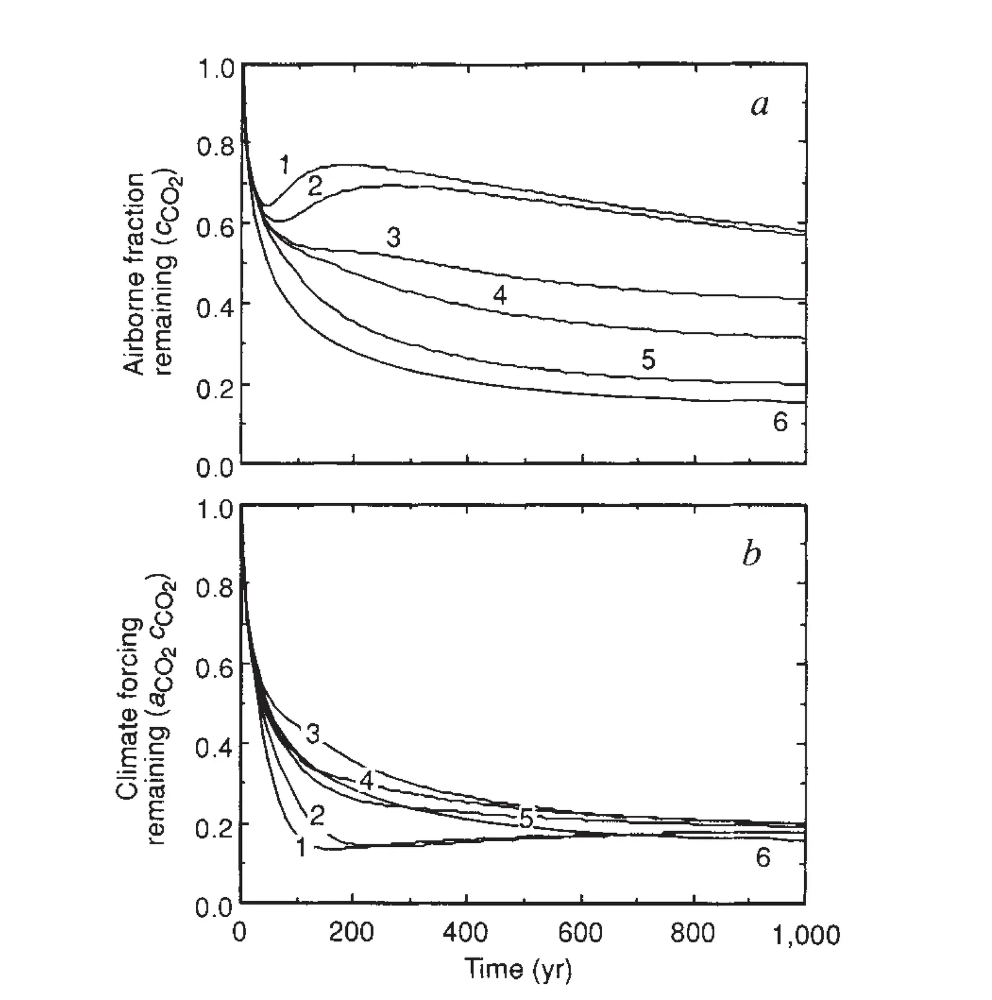

Insensitivity of global warming potentials to carbon dioxide emission scenarios
Key finding. Global warming potentials are largely insensitive to the carbon dioxide emission scenario assumed, because two effects of higher CO2 concentrations work in opposite directions: each additional molecule of CO2 produces less radiative forcing than the last, while the atmospheric lifetime of that CO2 grows as the ocean's capacity to absorb it saturates.

What question did this research address?
Global warming potentials express the warming caused by a pulse of some greenhouse gas relative to the warming caused by a pulse of carbon dioxide. That denominator depends on how much CO2 is already in the atmosphere, which in turn depends on which emission scenario the future follows.
This paper asked whether that dependence matters — whether global warming potentials calculated under one CO2 emission scenario hold under another.
What did we find?
The radiative forcing from CO2 grows roughly with the logarithm of its concentration, so the warming effect of each additional molecule falls as the background concentration rises. Taken alone, this would make global warming potentials strongly scenario-dependent.
Working against it, the ocean's buffering capacity declines as it takes up more carbon, so a pulse of CO2 emitted into a higher-CO2 world persists longer in the atmosphere.
These two effects — one from physics, one from ocean chemistry — largely cancel. The time-integrated warming from a pulse of CO2 is therefore much less sensitive to the background emission scenario than either effect alone would suggest.
Why does it matter?
The cancellation is what makes global warming potentials usable at all. If they varied strongly with the assumed future, comparing greenhouse gases would require first agreeing on which scenario the world was following.
The same reasoning underlies the later concept of a carbon budget: if each increment of CO2 emission causes its own roughly scenario-independent increment of warming, then avoiding further warming requires bringing emissions near zero rather than merely reducing them.
Citation, data, and code
Ken Caldeira and James F. Kasting (1993). Insensitivity of global warming potentials to carbon dioxide emission scenarios. Nature 366, 251-253.